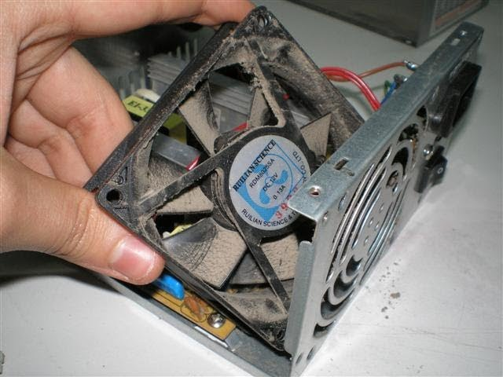

Misión
Formar Profesionales Técnicos Bachiller de manera integral, que respondan a las necesidades del sector productivo y contribuyan al desarrollo del país, fomentando valores éticos y compromiso social.
Visión
Ser una institución líder en educación media superior técnica, reconocida por la calidad y pertinencia de sus programas, que impulsa el desarrollo económico y social de México.
Soporte y Mantenimiento en Equipos de Cómputo
La carrera de Soporte y Mantenimiento en Equipos de Cómputo está enfocada en formar profesionales técnicos capaces de brindar mantenimiento preventivo y correctivo a equipos de cómputo, instalar y configurar software, diagnosticar fallas y ofrecer soporte técnico a usuarios.

Perfil de egreso
El egresado será capaz de:
- Brindar soporte técnico a equipos y redes de cómputo.
- Diagnosticar y reparar fallas de hardware y software.
- Instalar sistemas operativos, programas y controladores.
- Dar mantenimiento preventivo y correctivo a equipos.
- Aplicar normas de seguridad en el manejo de equipo electrónico.
Habilidades que desarrolla
- Pensamiento lógico y resolución de problemas técnicos.
- Trabajo en equipo y atención al cliente.
- Capacidad de análisis, organización y documentación de fallas.
- Uso de herramientas tecnológicas modernas.
Campo laboral
Los egresados pueden trabajar en:
- Empresas de soporte técnico y mantenimiento.
- Departamentos de informática en empresas e instituciones públicas.
- Centros de servicio de computadoras.
- Como técnicos independientes o emprendedores.
Materias destacadas
- Hardware de computadoras
- Sistemas operativos
|
- Redes de computadoras
- Seguridad informática
- Electrónica básica
- Diagnóstico y reparación